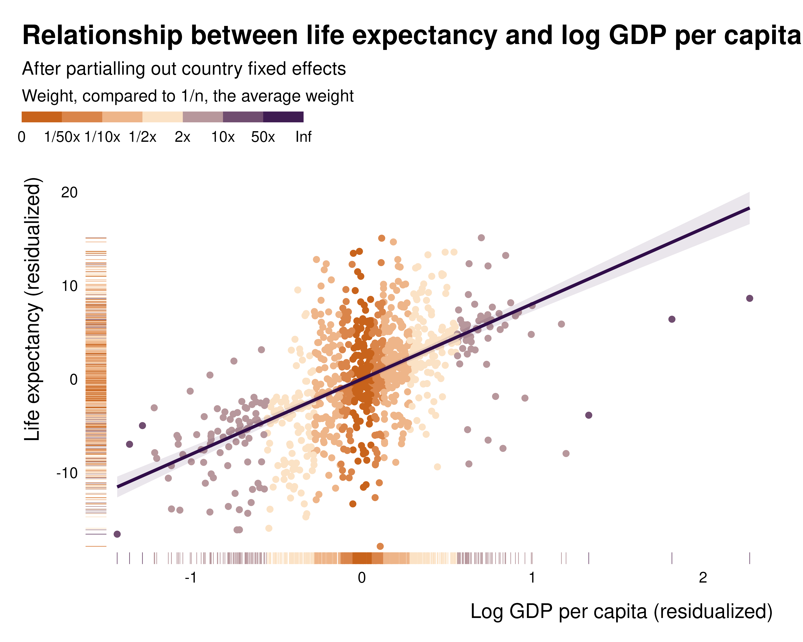

Background on the weights
background.RmdThis document very quickly introduces the maths and theory behind the weights. More detail is available in the associated research paper.
Intuition
These weights represent how much each observation contributes to the identification. They correspond to the leverage of each observation in the bivariate regression of the independent variable on the treatment or main variable of interest, after partialling out the controls.They are equivalent–up to a normalization to one–to the multiple regression weights defined by Aronow and Samii (2016) and previously discussed in Angrist and Pischke (2009). Observations for which the main variable of interest is well explained by controls only contribute little to identification; the controls or fixed effects absorb most of the variation.
A range of existing tools from the statistics literature, such as leverage and Cook’s distance, already measure the influence of individual observations on regression parameters. These measures, however, assess influence on the parameter vector and are not directly suited for applied economics where interest is typically confined to a single parameter: the coefficient of the treatment variable. To get to a more suited measure, the present procedure consists in first applying the Frisch-Waugh-Lovell theorem and then computing leverage for the regression of the residualized outcome on the residualized treatment. The residuals are obtained from regressions on the full set of controls, including fixed effects and other identification-related controls such as control functions. This produces observation-specific weights describing the extent to which each observation contributes to the estimation of the treatment effect.
The weight of each observation is:
where is the variable of interest and the vector of controls and fixed effects. These weights are therefore the normalized squared residuals of the regression of on the full set of controls.
In the package, they are computed using the same estimation procedure
as the one used in the main regression, just replacing the outcome
variable with the dependent variable of interest. The following example
illustrates how the idid_partial_out function works on an
example model describing the relationship between median price and
number of housing sales in Texas:
library(ididvar)
library(ggplot2)
library(dplyr)
#>
#> Attaching package: 'dplyr'
#> The following objects are masked from 'package:stats':
#>
#> filter, lag
#> The following objects are masked from 'package:base':
#>
#> intersect, setdiff, setequal, union
library(fixest)
reg_ex_fixest <- ggplot2::txhousing |>
mutate(l_sales = log(sales)) |>
fixest::feols(fml = l_sales ~ median + listings | year + city, vcov = "twoway")
#> NOTE: 1,434 observations removed because of NA values (LHS: 568, RHS: 1,434).
idid_partial_out(reg_ex_fixest, "median") |>
head()
#> NOTE: 1,434 observations removed because of NA values (LHS: 616, RHS: 1,424).
#> [1] 4357.90243 -8317.76671 -8897.22065 1603.32003 308.18621 -99.38339
txhousing |>
feols(fml = median ~ listings | year + city, vcov = "twoway") |>
residuals() |>
head()
#> NOTE: 1,434 observations removed because of NA values (LHS: 616, RHS: 1,424).
#> [1] 4357.90243 -8317.76671 -8897.22065 1603.32003 308.18621 -99.38339Group level weights
One can compute group level weights by summing the weights of observations within that group. This allows for a quick computation and interpretation of weights at higher aggregation levels. These group-level weights correspond to the within-group variance of the conditional treatment status.
In low weight groups, there is only a little amount of variation in the dependent variable to estimate an effect. Considering an extreme case gives a clear intuition: when using group level fixed effects, if there is no variation in for that group, this group does not contribute to the estimation of the parameter for at all. For instance, in the previous example, if all prices are the same in a given city, it will not be possible to estimate how variations in prices are related with variation in sales in that city.
What do they represent, really?
By definition, in the partialled out regression, these weights represent the squared-distance to the center of the distribution of the variable of interest, after partialling out the controls. The following example, describing the relationship between x and y partialled out and the weights illustrates this:
library(gapminder)
gapminder_sample <- gapminder |>
mutate(l_gdpPercap = log(gdpPercap)) |>
filter(continent %in% c("Africa", "Europe")) |>
left_join(country_codes, by = join_by(country))
reg_ex <- feols(gapminder_sample, lifeExp ~ l_gdpPercap | country, cluster = "country")
data_partial <- eval(reg_ex$call$data) |>
mutate(
lifeExp_per = idid_partial_out(reg_ex, "lifeExp", "l_gdpPercap"),
l_gdpPercap_per = idid_partial_out(reg_ex, "l_gdpPercap"),
weight = idid_weights(reg_ex, "l_gdpPercap"),
weight_log = log10(weight * length(weight))
)
data_partial |>
ggplot(aes(x = l_gdpPercap_per, y = lifeExp_per, color = weight_log)) +
geom_point(size = 1.5) +
geom_smooth(
method = "lm",
formula = 'y ~ x',
color = idid_colors_table[["base"]],
fill = idid_colors_table[["base"]],
alpha = 0.1
) +
geom_rug(linewidth = 0.2) +
theme_idid() +
scale_color_idid() +
labs(
title = "Relationship between life expectancy and log GDP per capita",
subtitle = "After partialling out country fixed effects",
x = "Log GDP per capita (residualized)",
y = "Life expectancy (residualized)",
color = "Weight, compared to 1/n, the average weight",
)
While this pattern clearly appears in the partialled out regression, it is much less visible when plotting the raw relationship, hence the importance of analysing those weights and plotting the partialled out regression:
data_partial |>
ggplot(aes(x = gdpPercap, y = lifeExp, color = weight_log)) +
geom_point(size = 1.5) +
geom_rug(linewidth = 0.2) +
theme_idid() +
scale_color_idid() +
scale_x_log10() +
labs(
title = "Relationship between life expectancy and GDP per capita",
subtitle = "Raw relationship",
x = "GDP per capita",
y = "Life expectancy",
color = "Weight, compared to 1/n, the average weight",
)